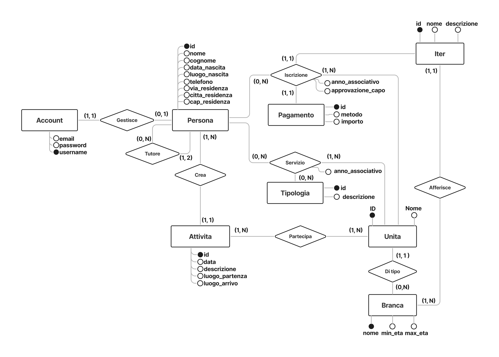

Informatica
Il binomio del Web: Frontend e Backend
L'Informatica è la materia cardine del mio percorso e quest'anno mi ha permesso di comprendere a fondo l'architettura e il funzionamento dei siti web, strumenti che oggi fanno parte della vita quotidiana di chiunque. La parte che mi ha appassionato di più è stata proprio scoprire come cooperano le due anime di un'applicazione:
Il Frontend
Rappresenta l'interfaccia utente (UI) ed è strutturato per garantire un'esperienza d'uso dinamica, interattiva e pienamente responsive.
Il Backend
Costituisce la logica di business e l'infrastruttura di persistenza dell'applicazione. Gestisce l'elaborazione delle richieste dei client, l'autenticazione degli utenti, il routing dei flussi applicativi e il dialogo con il database relazionale per una manipolazione dei dati sicura ed efficiente.
A coronare questo percorso è stato il progetto di classe. Lavorare in un team strutturato simulando una vera software house, dividendo i compiti e gestendo il codice tramite Git, ha permesso di unire queste competenze e di sperimentare da vicino le reali dinamiche del mondo del lavoro.
L'Obiettivo: Scout Admin e la digitalizzazione
È da questa sinergia che è nato Scout Admin, una piattaforma web concepita per risolvere un problema concreto: la complessa gestione amministrativa e burocratica dei gruppi scout. L'applicazione nasce con l'obiettivo di centralizzare le informazioni e connettere i tre pilastri fondamentali dell'associazione:
La Direzione di Gruppo (Segreteria): per la supervisione dei censimenti e della contabilità.
Gli Staff di Unità (Educatori): per avere sempre a portata di mano anagrafiche, progressioni educative e dati di emergenza dei ragazzi.
Le Famiglie: per permettere ai genitori di iscrivere i figli e aggiornare i dati in totale autonomia.
L'impatto stimato di questa soluzione è una riduzione del 70% del tempo speso dai capi in attività burocratiche, tempo restituito alla progettazione pedagogica e al rapporto diretto con i ragazzi.

Sviluppare Scout Admin ha significato anche scontrarsi con vincoli normativi e tecnici di alto livello. Trattandosi di un applicativo che gestisce dati personali e sanitari (come allergie e patologie) di soggetti in larga parte minorenni, la sicurezza è stata la nostra priorità.
Il database relazionale è stato progettato seguendo i principi di privacy by design imposti dal GDPR. Abbiamo implementato un sistema di controllo degli accessi basato sui ruoli (RBAC), assicurando che ogni utente possa visualizzare solo i dati di sua stretta competenza, e tecniche di cifratura per protect i dati sensibili.
Argomenti principali del programma
- Linguaggio SQL e Gestione Dati
- Applicazioni Web e Architettura
- Sviluppo Backend con il Linguaggio PHP
- Webservice ed Architettura API